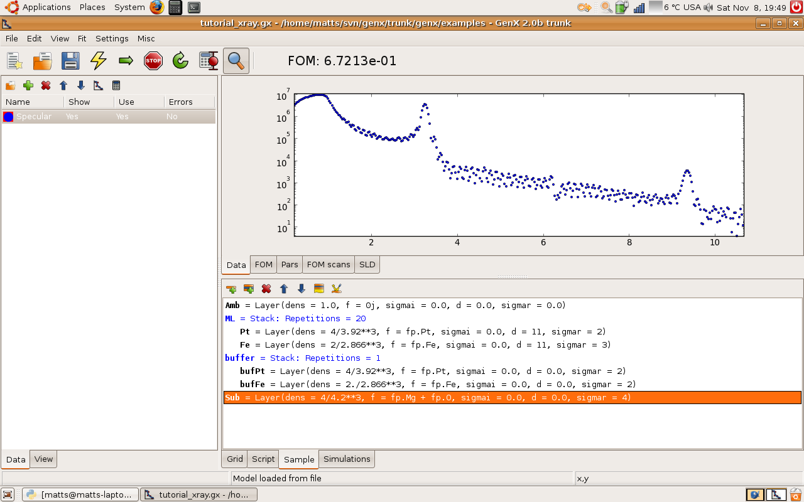

Getting started
Start by opening GenX. Load the reflectivity plugin by going to the menu Settings - Plugins - Load - Reflectivity. The computer will work abit then two new tabs will appear in the lower right section of the window, Sample and Simulations. This is where we will define our sample later.
Loading the data
Load the data by clicking on the folder icon the data tab (leftmost splitter window). Rember that a data set has to be marked in the list below. If you started fresh the data set will have the name Data 0. In the file dialog choose the file example/xray_fitting.dat. The data should appear in the plot on the right, tab Data. Change the y-scale to lograthmic by right clicking on the plot and choose y-scale - log. If you would like to inspect the data values click on the tab View in the left part of the window. In the top of that tab there is a choice box, choose your data set. All the data in the data set will appear in the grid below. Note that there are 6 columns: x_raw, y_raw, Error_raw, x, y, Error. The one ending with raw is the loaded data. The other 3 can be changed by transformations given in the calculations dialog. See the neutron tutorial for more information about transformations of data.Creating a sample
Time to create the sample! Click on the Sample tab. The data we just loaded comes from the a multilayer with the structure: MgO/Fe 4Å/Pt 39Å/[FeCo XXÅ/Pt XXÅ]*20
Now this structure should be defined in GenX. Start by adding two stacks, second icon on the toolbar in the Sample tab. Give them the names buffer and ML. Then add layers, first button, with parameters shown in the screenshot below. You edit the values by double clicking on the row. If you become unsecure about what units or what the parameters mean there is an onboard under the menu Misc - Models Help. For this example choose the interdiff model in the frame that appears.
{kind=link}
When the sample is defined and the data loaded, lets simulate the structure to see what happens. Press the yellow lightning on the main toolbar, F9 works as well. A red curve representing the simulated data will appear in the data plot.
Coupling parameters
In order to make the fitting more effective it can be adventageous to couple parameters. One way is to contrain interdependent parameters another way is to reexpress the parameters so that information easily obtained from the diffraction pattern is used, for example the bilayer thickness of a mulilayer. Under the tab simulations exists the possiblity to express special commands that couple parameters before they are simualted. First create a new parameter by clicking the blue nut on the toolbar. And define the custom parameter (cp) Lambda as shown below.
Next, choose your data set and press the green plus to add a new command. Press simulate to update the model.

The command sets the thickness of the Pt in the mulilayer to the bilayer thickness minus the Fe thickness.
Fitting the data
First go to the Grid tab in the lower part of the window. To define a parameter right click on the leftmost cell. A menu will appear where the parameters you can fit appear.Last updated: